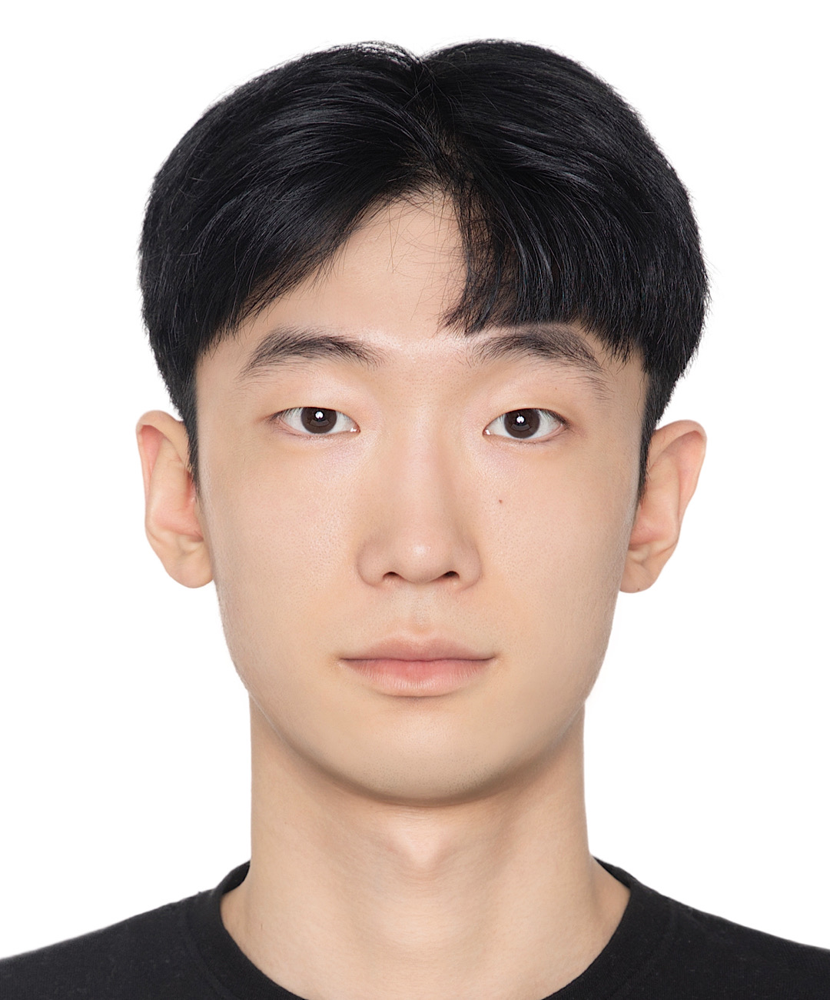
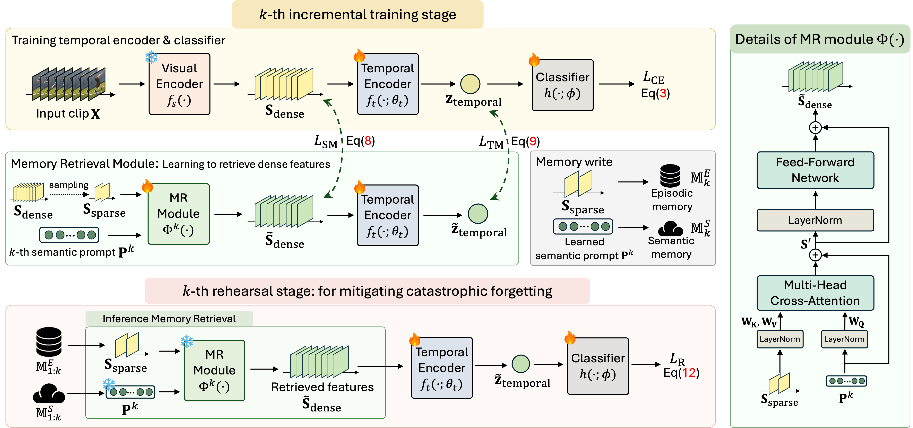
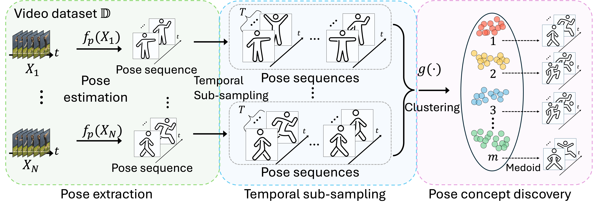
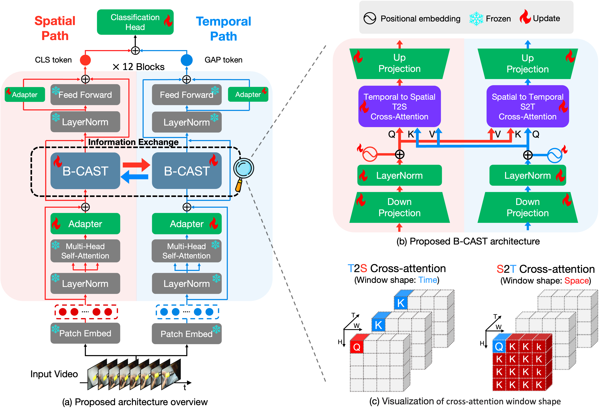

✉️ Contact
Email: jong980812@khu.ac.kr

🎓 M.S. Student in Computer Science
🏛 Kyung Hee University
🔬 Vision and Learning Lab, Advised by Prof. Jinwoo Choi
📧 jong980812@khu.ac.kr
Hello! I am currently pursuing a Master’s degree in Computer Science at Kyung Hee University, with one semester remaining until graduation.
Prior to my graduate studies, I earned dual bachelor's degrees in Biomedical Engineering and Electronics Engineering. This interdisciplinary background has given me a strong foundation in signal processing, embedded systems, and AI, which I now integrate into my research.
My research is conducted at the Vision and Learning Lab under Professor Jinwoo Choi, where I specialize in Video Understanding. I am particularly focused on:
Recent, I am deeply passionate about Video-eXplainable-AI and Video-Text multimodal learning . I am always open to collaboration and discussions on cutting-edge research in Computer Vision, Multimodal AI, and Explainability.
Feel free to connect with me! 🚀
I’m beyond excited to announce that our paper has been accepted to NeurIPS 2025 as a Spotlight (3.5% acceptance rate), one of the most prestigious venues in machine learning and AI!
Title: “Disentangled Concepts Speak Louder Than Words: Explainable Video Action Recognition”
This work introduces a novel framework for structured and interpretable video action recognition, disentangling motion dynamics, objects, and scenes into human-understandable concepts. By doing so, it provides not only strong performance but also clear explanations of model decisions.
The Spotlight recognition makes this achievement even more meaningful, as only a small fraction of submissions receive this honor. It’s an encouraging step forward in my research journey on explainable AI for video understanding.
🙏 I’m truly grateful to my amazing collaborators — Wooil Lee, Gyeong-Moon Park†, Seong Tae Kim†, and Jinwoo Choi† — for their invaluable contributions. Excited to present this work at NeurIPS and share our vision for more transparent and interpretable AI systems!
I’m thrilled to share that my paper has been accepted to ICCV 2025 as a highlight paper, one of the top-tier conferences in computer vision!
Title: “ESSENTIAL: Episodic and Semantic Memory Integration for Video Class-Incremental Learning”
What makes this even more meaningful is that it was accepted after three submission attempts. The journey was challenging — filled with revisions, rejections, and countless hours of iteration — but it proved to be an incredible learning experience.
I’m deeply grateful for the growth that came through the process and couldn’t be more excited to finally see it accepted.
🙏 Thank you to everyone who supported me along the way. I look forward to presenting this work at ICCV and continuing to push forward in research!
* indicates equally contributed first authors
† indicates corresponding author

Authors: Jongseo Lee, Wooil Lee, Gyeong-Moon Park†, Seong Tae Kim†, Jinwoo Choi†
Conference:Proceedings of Neural Information Processing Systems (NeurIPS) Spotlight (3.5% acceptance rate), 2025

Authors: Jongseo Lee*, Kyungho Bae*, Kyle Min, Gyeong-Moon Park†, Jinwoo Choi†
Conference:IEEE/CVF International Conference on Computer Vision (ICCV) Highlight, 2025

Authors: Jongseo Lee, Wooil Lee, Gyeong-Moon Park†, Seong Tae Kim†, Jinwoo Choi†
Conference:IEEE/CVF Computer Vision and Pattern Recognition (CVPR) 4th XAI4CV Workshop, Spotlight (16.7% acceptance rate) 2025

Authors: Jongseo Lee*, Joohyun Chang*, Dongho Lee, Jinwoo Choi†
Preprint: arXiv 2025 (IEEE Transactions on Pattern Analysis and Machine Intelligence, TPAMI, under review)
Authors: Jongseo Lee*, Geo Ahn*, Seong Tae Kim†, Jinwoo Choi†
Preprint: arXiv 2024 (under review)

Authors: Dongho Lee*, Jongseo Lee*, Jinwoo Choi†
Conference: Proceedings of Neural Information Processing Systems (NeurIPS), 2023
Authors: Jongseo Lee, Su Hyeon Kim, Sun Woong Jang, Jun Yeong Moon, Doug Young Suh†
Journal: Journal of Appropriate Technology, Volume 8(2), 2022
Authors: Jongseo Lee, Soohyun Park, Jinwoo Choi†
Conference: Korean Institute of Information Scientists and Engineers, 2024
Authors: Jongseo Lee, Soohyun Park, Jinwoo Choi†
Conference: Korean Institute of Information Scientists and Engineers (KIISE), 2024
Authors: Jongseo Lee, Joohyun Chang, Jinwoo Choi†
Conference: Korean Institute of Information Scientists and Engineers (KIISE), 2024